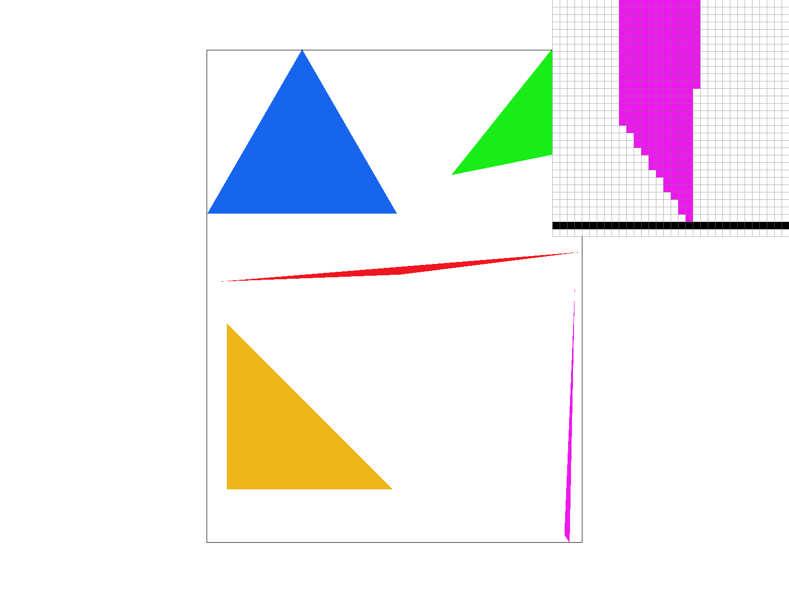
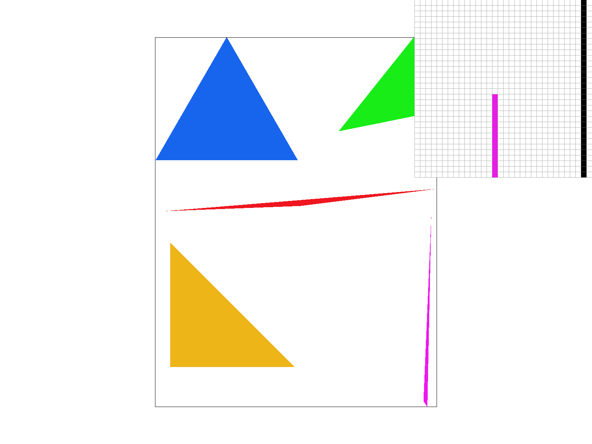
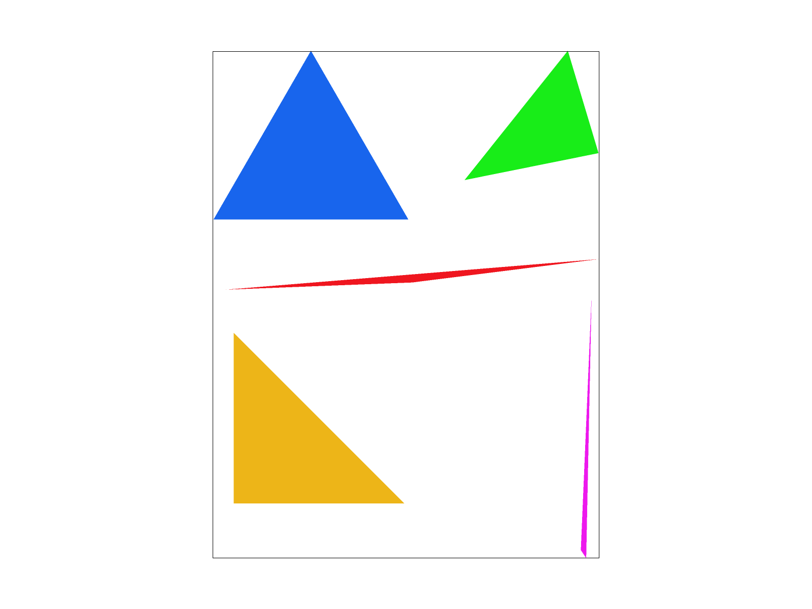
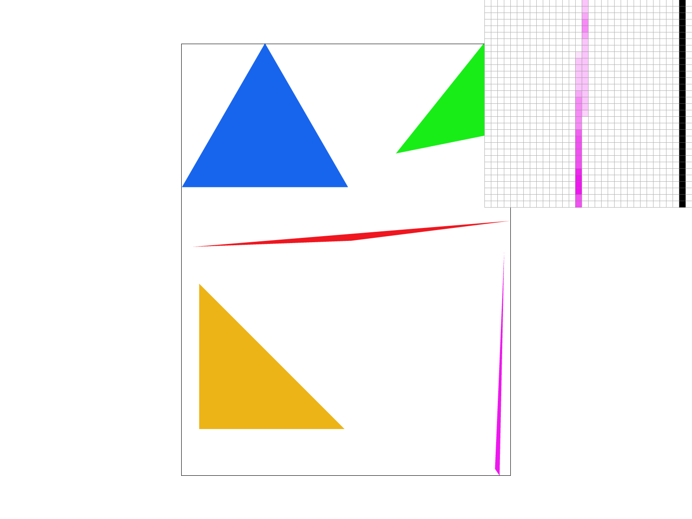
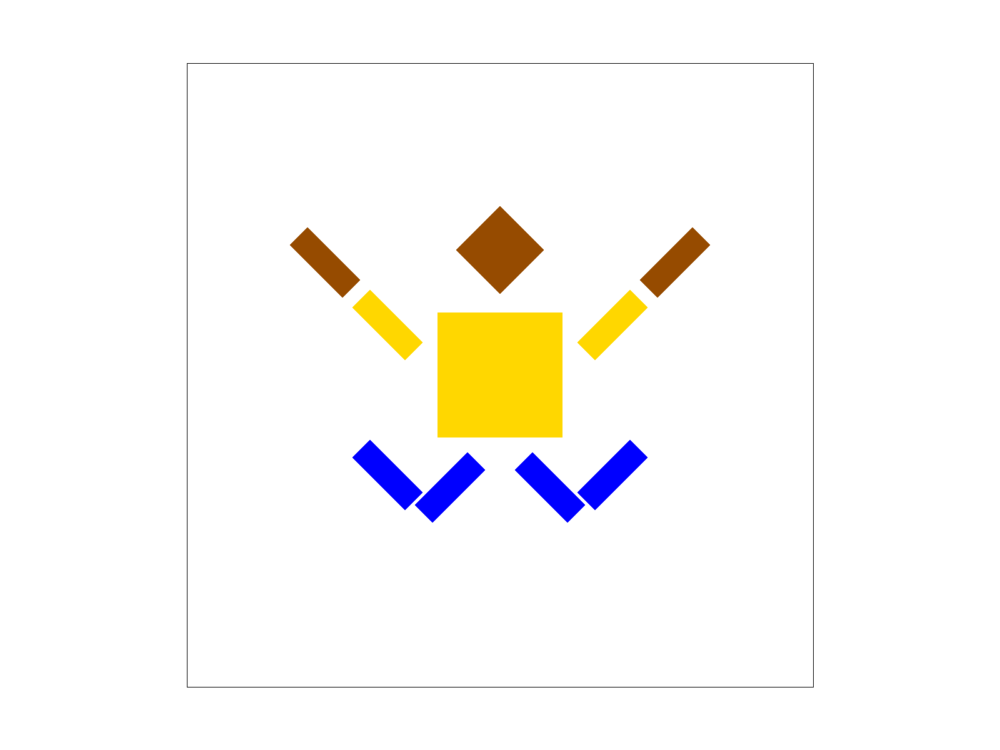
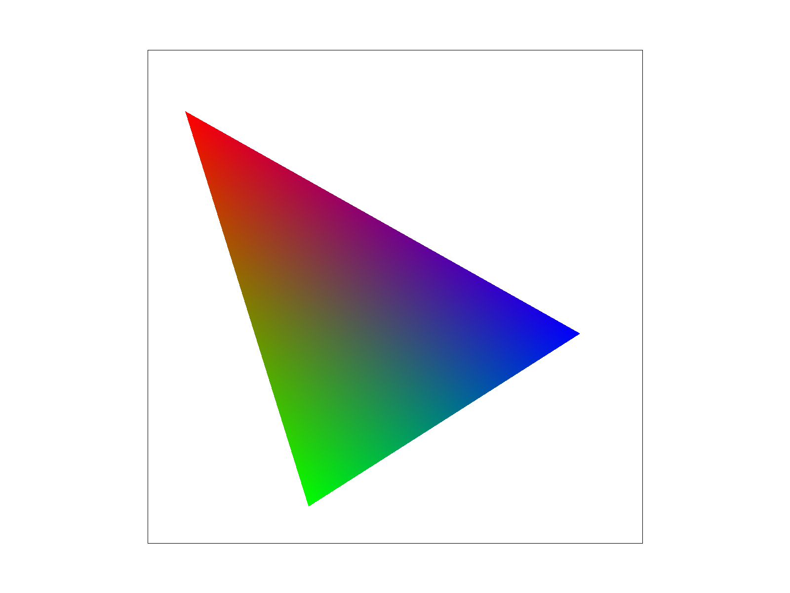
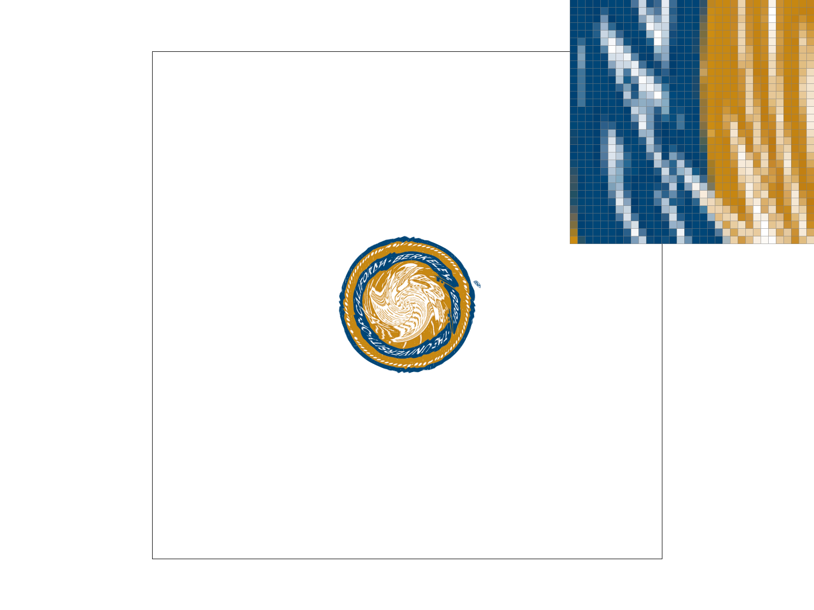
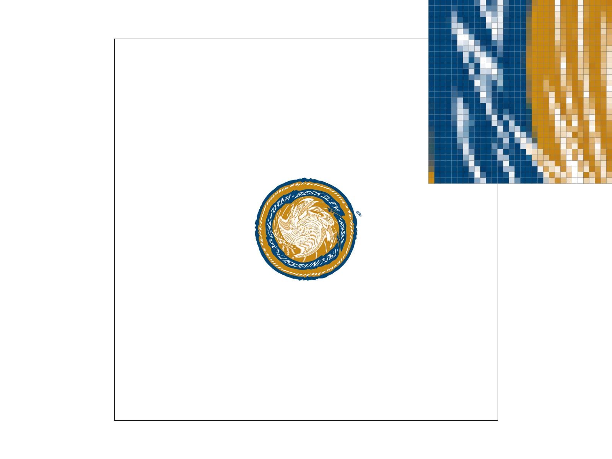
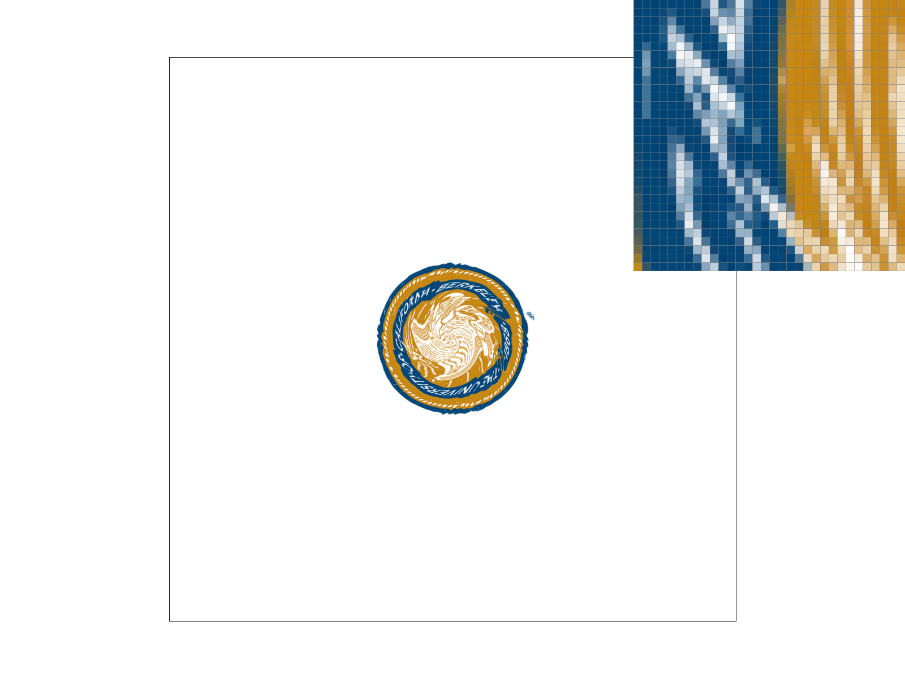
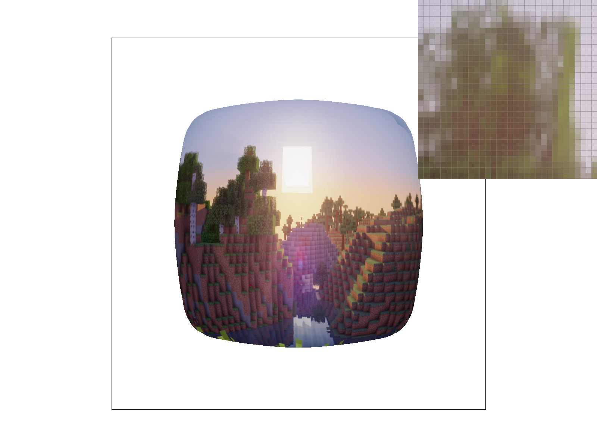

Overview
Give a high-level overview of what you implemented in this project. Think about what you've built as a whole. Share your thoughts on what interesting things you've learned from completing the project.
In this project I implemented a rasterizer which is capable of supersampling, utilizing barycentric coordinates, pixel sampling, and level sampling all in an effort to provide antialiasing to images which allows them, when rendered, to look smoother due to smaller choppy areas of the image being blurred. Also a smaller but still cool aspect of the rasterizer is the ability to apply transformations. As a whole this project is an application of the importance of constructing images via a series of triangles, and how antialiasing can be done in a variety of different ways (each with a different cost in the form of speed or memory). I’ve learned a lot from this project, one of which is the peculiarities that go into implementing these seemingly “simple” concepts. Even checking if a point lies inside a triangle requires calculating a boundary box of pixels and then computing a series of line-tests to see if the point lies inside (or possibly on the bound) of the triangle. One concept that I learned most from this project is just how mipmaps are used as a means of antialiasing. Before the project I had a general idea of how they worked and what they did, but it wasn’t until I implemented it first-hand that I saw what each level represented and how they could be used to antialias different triangles based on the best mipmap level for each one. Overall, I quite enjoyed building a rasterizer and I learned a lot about how much goes into rendering even a single triangle (also I love barycentric coordinates now they make so much of rasterization make sense).
Section I: Rasterization
Part 1: Rasterizing single-color triangles
Walk through how you rasterize triangles in your own words.
In order to rasterize triangles, we first have to compute a bounding box of the triangle by finding the min & max x & y values of the pixels that are contained by the 3 points of the triangle. I did this by computing the min & max x & y values for the 3 points, and then finding which pixel these min/max values associated with using a series of checks which determined if the min and max points were above or below a 0.5 threshold to decide if the bounding pixel was before or after the relevant point. After this bounding box is found, we sample each pixel in the box and conduct 3 line-tests (utilizing the definition of a line-test in lecture Li(x,y)=-(x-xi)dyi+(y-yi)dxi), and if either all points are less than or equal to 0 or all points are greater than or equal to 0, we fill in the pixel. We do both all less than or equal to and all greater than or equal to in order to account for both clockwise and counterclockwise points.
Explain how your algorithm is no worse than one that checks each sample within the bounding box of the triangle.
My algorithm is no worse than one that checks each sample within the bounding box of the triangle because my algorithm checks each sample within the bounding box of the triangle. By computing the minimum and maximum x and y pixels via flooring (or ceiling) the point and adding (or subtracting) 0.5, I successfully make the program only check the bounding box rather than the entire frame buffer.
Show a png screenshot of basic/test4.svg with the default viewing parameters and with the pixel inspector centered on an interesting part of the scene.

|

|
Part 2: Antialiasing triangles
Walk through your supersampling algorithm and data structures. Why is supersampling useful? What modifications did you make to the rasterization pipeline in the process? Explain how you used supersampling to antialias your triangles.
My supersampling algorithm begins with rasterize_triangle, where I made a small edit to my original implementation from Task 1 and added an inner double for loop inside my current double for loop, with the outer double loop iterating through each pixel, and the inner double for loop iterating through up to the square root of the sample rate (which I defined as “scale”). The new x and y that I would check would be the “sub pixels” within the original pixel (with each “sub pixel” having a left/right/up/down distance of 1 / sqrt(sample_rate) from the other “sub pixels”). The last edit I made to rasterize_triangle was changing what I input to fill_pixel, replacing the integer representations of x and y with scaled variants to place them correctly in the sample_buffer. This leads me to the next part of my algorithm which was changing fill_pixel by adding a boolean parameter to check if the pixel that I was filling was a triangle, in which case the only edit I made was to scale the width portion of the index calculation, or if I was filling in a line/point, in which case I ensured that every “sub pixel” (index of sample_buffer) would map to the same color for the inputted line/point. The next part of my supersampling algorithm lies in resolve_to_framebuffer, but before I explain this I want to mention that I also edited set_framebuffer_target and set_sample_rate to account for the sample_rate when resizing the sample_buffer. As far as changes to resolve_to_framebuffer goes, I did something similar to rasterize_triangle and added an inner double for loop also iterating up to the scale. This way, I could compute the average of the rgb values found from all the “sub pixels” and set the pixel equal to this average. I believe supersampling was useful because it allowed pixels that were just outside or inside the boundaries to have a little bit of antialiasing applied to them, which made those pixels fade a bit but make the overall image look much smoother. For my triangles, supersampling allowed pixels near the corners of the triangle to be antialiased and thus made the corners look much smoother and much more connected than with the simple rasterization implementation from Task 1. The edges of my triangles also looked a lot smoother due to the antialiasing that the supersampling brought about, with fewer jaggies resulting in a much cleaner edge.
Show png screenshots of basic/test4.svg with the default viewing parameters and sample rates 1, 4, and 16 to compare them side-by-side. Position the pixel inspector over an area that showcases the effect dramatically; for example, a very skinny triangle corner. Explain why these results are observed.
The supersampling allowed the corner of the triangle to be antialiased, which explains how there are many more blurry pixels when the sample rate is 4 or 16 when compared to a sample rate of 1. This results in the much cleaner corner that a higher sample rate provides, as the faded pixels make the corner look more connected and smoother once you look at the overall picture.

|

|
|

|

|
|
|

|
Part 3: Transforms
Create an updated version of svg/transforms/robot.svg with cubeman doing something more interesting, like waving or running. Feel free to change his colors or proportions to suit your creativity. Save your svg file as my_robot.svg in your docs/ directory and show a png screenshot of your rendered drawing in your write-up. Explain what you were trying to do with cubeman in words.
I am the new Frankenstein as I have turned cubeman into robot Oski who is jumping for joy in the new svg file.
|

|
Section II: Sampling
Part 4: Barycentric coordinates
Explain barycentric coordinates in your own words and use an image to aid you in your explanation. One idea is to use a svg file that plots a single triangle with one red, one green, and one blue vertex, which should produce a smoothly blended color triangle.
Barycentric coordinates are weighted coordinates that allow points to have weighted parameters (such as color), which are influenced by the point’s (let’s call it p) distance to the points that make up the shape that p is inside. As can be seen in the example, each vertex of the triangle has one of the 3 rgb values (a red point, a green point, and a blue point), and all points inside the triangle have a weighted color. Points closer to red are more reddish in color, points closer to green are more greenish in color, and points closer to blue are more bluish in color, with points in the center of the triangle having a mix of all three rgb values.
|

|
Show a png screenshot of svg/basic/test7.svg with default viewing parameters and sample rate 1. If you make any additional images with color gradients, include them.

|
Part 5: "Pixel sampling" for texture mapping
Explain pixel sampling in your own words and describe how you implemented it to perform texture mapping. Briefly discuss the two different pixel sampling methods, nearest and bilinear.
Pixel sampling is a way of mapping points from pixel space onto texture space, allowing for textures to be applied properly in their respective positions onto our visualized pixel space. To implement pixel sampling (utilizing most of my code from task 4 as a skeleton), I first calculated the barycentric coordinates of the sampled point with respect to the three points of the triangle. I then used these barycentric coordinates to find the respective (u, v) point in texture space (by multiplying alpha and (u0, v0), beta and (u1, v1), gamma and (u2, v2), and summing them together). I input this (u, v) point into either sample_nearest or sample_bilinear (whichever was requested). For both of these sampling techniques, I computed some bounding checks (in case the found (u, v) wasn’t in [0, 1]), after which I computed the coordinates for the 4 closest points to (u, v) (naming them top_left, top_right, bottom_left, and bottom_right for their respective positions from (u, v)). For sample_nearest, I then computed the distance from (u, v) to each of these 4 points, and then returned the color of the point closest to (u, v). For sample_bilinear, I computed a new alpha and beta utilizing the respective horizontal and vertical distance of (u, v) from the 4 points, and utilized the alpha to find an average top color and an average bottom color, and then utilized beta to find an average overall color to return for (u, v). Nearest pixel sampling allocates rgb values for a pixel based on the point closest to its respective texture coordinate point. Since it’s only based on one point, this form of pixel sampling may look a little “choppy” in the final output. Bilinear pixel sampling, on the other hand, utilized bilinear interpolation to assign rgb values for a pixel, where the bilinear interpolation results in weighted rgb values with closer points in coordinate space having more weight. This results in an antialiasing-like effect with the final output being a little blurred.
Check out the svg files in the svg/texmap/ directory. Use the pixel inspector to find a good example of where bilinear sampling clearly defeats nearest sampling. Show and compare four png screenshots using nearest sampling at 1 sample per pixel, nearest sampling at 16 samples per pixel, bilinear sampling at 1 sample per pixel, and bilinear sampling at 16 samples per pixel.
|
|

|
|

|

|
Comment on the relative differences. Discuss when there will be a large difference between the two methods and why.
Overall, nearest sampling at 1 sample per pixel is the most “choppy”, and bilinear sampling at 16 samples per pixel is the most “blurry.” The nearest sampling at 16 samples per pixel is somewhat similar as the bilinear sampling at 1 sample per pixel, as to be expected since both supersampling and bilinear sampling result in a blurring of pixels. However, this blurring makes the bilinear sampling appear smoother and more natural than the nearest sampling. There will be a large difference between the two methods when points close to each other in texture space have vastly different rgb values. This is because with nearest sampling, it would look very choppy with the nearest point to a coordinate determining vastly different colors. Meanwhile with bilinear sampling, it would look very smooth yet blurry as the interpolation creates a color that is a weighted combination of the different colored points.
Part 6: "Level sampling" with mipmaps for texture mapping
Explain level sampling in your own words and describe how you implemented it for texture mapping.
Level sampling is the utilization of mipmaps (which hold a series of differing resolutions of the image) to selectively antialias different triangles (since some may hold more detail in texture space than others) in a manner that’s cost effective (compared to supersampling) but does require extra memory to store the various lower resolutions of the image. In order to implement it for texture mapping, I changed my rasterize_textured_triangle function from Task 5 to calculate barycentric coordinates for (x + 1, y) and (x, y + 1) (defaulting to the barycentric coordinates for (x, y) if the incremented points were outside the triangle), and utilized these new barycentric coordinates to compute p_dx_uv and p_dy_uv, respectively. I then constructed a SampleParams struct and passed it into tex.sample. Then in tex.sample I created a series of if/else statements to account for all 6 possible combinations of psm and lsm. When lsm equals L_ZERO, the process is the same as what’s described in Task 5. When lsm equals L_NEAREST, I computed the nearest level by rounding the continuous level (which was done by finding the dx and dy vectors as explained in the spec, scaling them by width and height, utilizing the L formula from lecture, and then taking the log2 of L to find the level), did some bound checks to ensure the level is in [0, mipmap.size() - 1], then called either sample_nearest or sample_bilinear like in Task 5, but this time with the computed level. When lsm equals L_LINEAR, I compute a continuous level (with bound checks similar to what I did for L_NEAREST), computed an alpha that gives greater weight to the level that the continuous level is closer to, and then computed either sample_nearest or sample_bilinear for both adjacent levels, returning a color that utilized alpha to create a weighted average of the rgb values of the adjacent mipmap levels.
You can now adjust your sampling technique by selecting pixel sampling, level sampling, or the number of samples per pixel. Describe the tradeoffs between speed, memory usage, and antialiasing power between the three various techniques.
Changing pixel sampling from nearest to bilinear provides a little antialiasing power with a cost of just a few lerp computations, making it an average performer in all three aspects. Level sampling is a different method of creating antialiasing power by utilizing different levels of mipmaps, which also increases the speed since the cache can be taken advantage of. However, level sampling’s utilization of mipmaps also requires more memory to hold the various resolutions of the image. Meanwhile increasing the number of samples per pixel leads to arguably the best antialiasing power, but it’s also by far the slowest since the total number of computations is multiplied by the number of samples per pixel, which can grow very quickly with just a small increase in the sample rate.
Using a png file you find yourself, show us four versions of the image, using the combinations of L_ZERO and P_NEAREST, L_ZERO and P_LINEAR, L_NEAREST and P_NEAREST, as well as L_NEAREST and P_LINEAR. To use your own png, make a copy of one of the existing svg files in svg/texmap/ (or create your own modeled after one of the provided svg files). Then, near the top of the file, change the texture filename to point to your own png. From there, you can run ./draw and pass in that svg file to render it and then save a screenshot of your results. Note: Choose a png that showcases the different sampling effects well. You may also want to zoom in/out, use the pixel inspector, etc. to demonstrate the differences.
|
|
|
|
|

|
Section III: Art Competition
If you are not participating in the optional art competition, don't worry about this section!